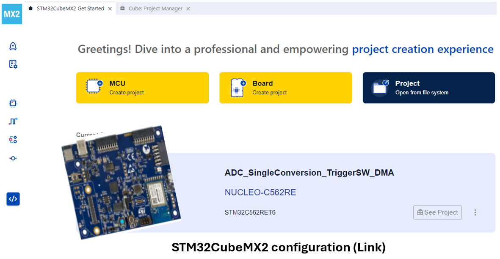

Migration example introduction ¶
This section demonstrates the migration process with a practical example. The example is based on a real project and shows the steps to migrate from HAL1 to HAL2. The example is divided into several parts, each focusing on a specific aspect of the migration process. This tutorial is designed to help you understand the migration process and the tools used to perform it.
In this section, experiment:
-
The full migration process HAL1 cube firmware example (ADC_SingleConversion_TriggerSW_DMA) : from the project setup to the final HAL2 based functional example.
-
IDE project settings update : the IDE project settings and configurations required for the migration.
-
- HAL1 Code detection:
-
-
Allowing to detect HAL1 references in the applicative code and generate a log file with these references and with links to the related migration documentation section.
-
-
- HAL1 to HAL2 applicative code transition using available documentation and STM32CubeMX2
-
-
The manual migration steps required to complete the migration.
-
Note
-
Several STM32Cube HAL examples are available in the STM32Cube firmware repository. They can give you a good starting point for your migration process.
-
The HAL migration checklist ( link ) allows users to monitor their progress and ensure that all steps of the migration journey are completed successfully.
-
The BSP drivers are out of scope of migration material. In this example we are going to exclude any BSP driver and its references within the applicative.
Migrate HAL1 Cube Firmware project ¶
This section offers a detailed migration guide of the
ADC_SingleConversion_TriggerSW_DMA
example.
Original Project Details ¶
Important
• Project Duplication:
Before starting the migration process, it is highly recommended to duplicate the current project. This step ensures that a backup of the original project is available, allowing a revert to the previous state if any issues arise during the migration.
• Project Creation with STM32CubeMX2
In parallel, use STM32CubeMX2 to configure and generate the code using the same peripherals as the original project.
For more details, refer to: STM32CubeMX2
Before proceeding with the duplication and migration process, it is important to have a clear understanding of the original project.
|
Example |
ADC_SingleConversion_TriggerSW_DMA |
|---|---|
|
Board |
STM32H563ZI |
|
Firmware Package |
STM32Cube_FW_H5_V1.5.0 |
|
Project description |
This project demonstrate how to use an ADC peripheral to perform a single ADC conversion on a channel at each software start. Converted data is transferred by DMA into a table in RAM memory. |
|
Used HAL peripheral |
ADC, CORTEX, DMA, NVIC, GPIO, ICACHE, RCC, GENERIC, FLASH |
|
Project path |
C:/Users/user_name/STM32Cube/Repository/STM32Cube_FW_H5_V1.5.0 |
Migration project steps ¶
The following sections are dedicated to various aspects of the migration process. Each part provides detailed guidance and instructions to ensure an efficient transition.
|
STM32CubeMX2 configuration |
Migration steps |
|---|---|
|
 |
Duplicate the entire project directory, either by copying it to a different location or by renaming the copied directory. Replace HAL1 drivers by HAL2 Ensure that all necessary configuration files are correctly set up. Locate and identify all instances of HAL1 code. Identify the dependencies of the stubbed functions within the project and replace the stubs with their new implementations. |


For more details, see also The Migration journey